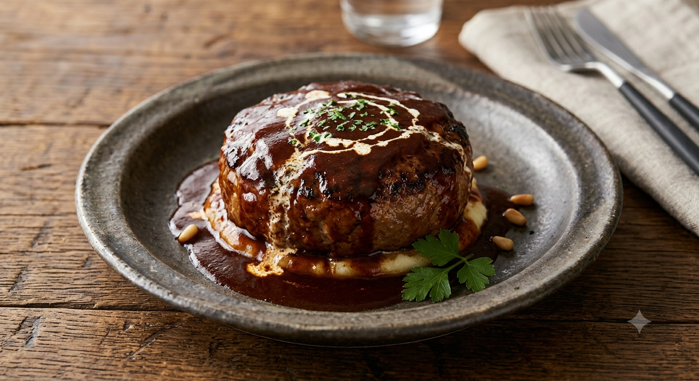
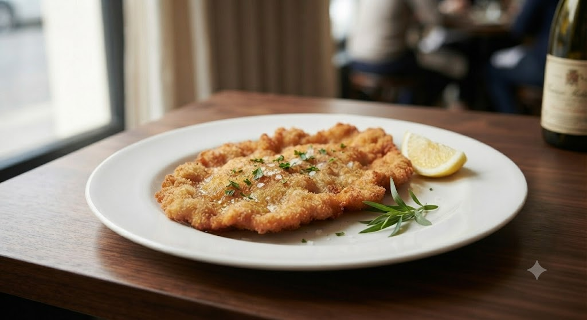
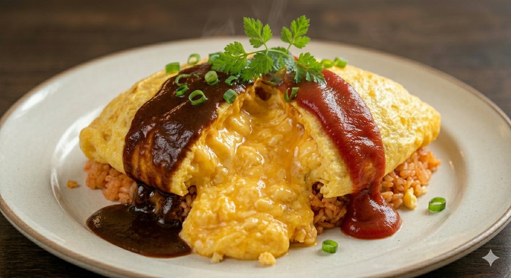
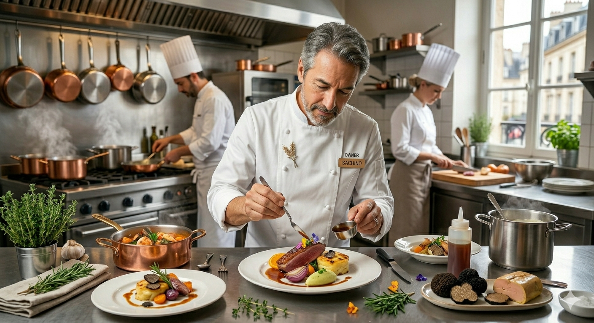

2 Days
Simmered Sauce
帝国ホテルで磨いた技術の結晶。それは、素材の旨味を極限まで凝縮させる「時間」という調味料です。一口食べればわかる、家庭では決して辿り着けない深みとコク。

サクサクの薄カツに特製ソースをたっぷりとかけ、バターライスと共に。帝国ホテルのエスプリが息づく、当店の看板メニューです。

卵4個を使用し、プロの火入れで仕上げた極上の食感。ナイフで開いた瞬間に広がる黄金の景色をお楽しみください。

「中華帽より、洋食のコック帽が格好よかった」
そんな少年の純粋な憧れから始まった料理人人生。帝国ホテルという日本最高峰の門を叩き、厳しい修行の日々を送りました。
1994年。慣れ親しんだ旭川の地で、自分の理想とする洋食を形にするために開業した「ローリエ」。30年間、変わらぬ情熱でフライパンを握り続けています。
OWNER CHEF
北山 潤
「お店のカツレツ」を食べた時、良い意味で期待を裏切られました。表面はカリカリ、中はフワトロ。帝国ホテル仕込みのスープも絶品で、心温まる時間でした。
— Gourmet Guest
雰囲気が庶民的で落ち着き、味はまさに上流。女性一人でも入りやすく、店員さんの笑顔も素敵。特別な日ではなく、日常にこんな美味しい洋食がある幸せ。
— Regular Customer
エビフライにタルタルソース。シンプルですが、ここのタルタルは最高です。静かな空間で、自分へのご褒美にぴったりなお店です。
— Dinner Guest
ローリエの「本物の味」をもっと身近に、もっと特別な体験へ。準備中の新サービスをいち早くご紹介します。
2日煮込んだ秘伝デミグラスハンバーグや特製洋食キットを急速冷凍真空パックで全国へお届け。遠方の方や贈り物にも。
「お店のソースを家でもかけたい」のご要望にお応えし、シェフ手作りの濃厚デミグラスソースを瓶詰めで数量限定販売。